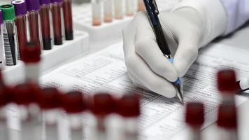
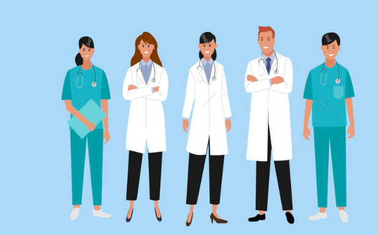

B
lood
B
ridge
Home
Health
Contact us
DONNER
check now

Lab Technecien
check now

DOCTOR
check now
SEEKER
check now
HOSPITAL
check now
Donation Conditions:
Pre-donation requirements:
Obtain an adequate amount of sleep, at least 5 hours. Have a meal before the donation. Bring a valid ID card.
Eligibility criteria for donors:
The donor must be at least 18 years old.
The donor's weight should not be less than 50 kilograms.
The donor's hemoglobin level should be suitable for donation.
The donor should be free from certain medical conditions that disqualify them from donating.
Donation disqualifications:
Donating blood within the last three months.
Recent surgical procedures.
Presence of specific medical conditions: high blood pressure, diabetes, malaria within the past two years, kidney failure, liver enlargement, respiratory diseases, rheumatic fever, thyroid diseases, hereditary blood disorders, and bleeding disorders.
Additional restrictions for women:
Pregnant women are not allowed to donate.
After giving birth, a minimum of three months should pass before donation.
Women should not be in their menstrual cycle.
Duration of the donation process:
The donation process takes approximately 20 minutes.
Time interval between donations for the same person:
There should be a minimum of 3 months between each donation to allow for the replenishment of blood cells.
Recommendations after donation:
Take a rest for ten minutes.
Avoid excessive physical exertion for two hours after donation.
Consume fluids to rehydrate the body.
Benefits of donation:
Humanitarian benefits:
By donating blood, you participate in saving the lives of several individuals who are in urgent need of blood or its derivatives. Blood can be separated into four main components: red blood cells, platelets, plasma, and clotting factors. These components can further be divided into smaller parts. The satisfaction and pride gained from this act of giving are immeasurable.
Health benefits:
There are health benefits associated with blood donation. Regular blood donation activates the bone marrow, the site of blood production, making it more efficient and active in producing new blood cells. Studies have shown that individuals who donate blood at least once a year have a lower risk of developing cardiovascular diseases and blood cancer. Regular blood donors have faster blood renewal cycles, approximately every 20 days compared to the natural renewal cycle of 120 days. The new blood cells are more effective in delivering oxygen to the body's organs, resulting in increased activity and vitality. The tests conducted during each donation provide regular reassurance about the donor's health.
The rewards of good deeds:
Blood donation is a form of charity, fulfilling a religious obligation. Saving a human life holds great significance, as the Quran states: "Whoever saves one life, it is as if he has saved mankind entirely." (Quran 5:32). Alleviating the suffering of others is also highly valued. Prophet Muhammad (peace be upon him) said: "Whoever relieves a Muslim's distress, Allah will relieve him of a distress from distresses on the Day of Judgment." (Reported by Al-Bukhari and Muslim).
Why should I be a blood donor?
Every three seconds, someone needs blood.
One in ten patients admitted to the hospital requires blood transfusion.
Your blood can save up to four people when its components are separated.
Blood donation revitalizes and energizes the body due to the renewal of blood cells.
Regular donors can obtain their own test results, including their blood type
© 2023 Blood BRIDGE